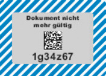

- 1.
Ausgestaltung der Zulassungsbescheinigung Teil I:
Trägermaterial: Neobond (150 g/m2), Farbe weiß
Format: Breite 210 mm, Höhe 105 mm, zweimal faltbar auf DIN A7, zweiseitig bedruckt.
In das Trägermaterial eingearbeitet sind die folgenden fälschungserschwerenden Sicherheitsmerkmale:
- –
Wasserzeichen (Motiv: „Stilisierter Adler“ – gesetzlich geschützt für die Bundesdruckerei),
- –
Melierfasern, teilweise fluoreszierend,
- –
Planchetten, fluoreszierend,
- –
Sicherheitsreagenzien als Schutz gegen chemische Rasurmanipulationen.
- 2.
Sicherheitsmerkmale:
Der Druck auf dem Trägermaterial weist folgende fälschungserschwerende Sicherheitsmerkmale auf:
- –
mehrfarbiger Guillochenschutzunterdruck (zweistufig verarbeitet) mit Irisverlauf und integrierten Mikroschriften auf beiden Seiten,
- –
Fluoreszenzaufdruck vorderseitig (Motiv: Bundesadler mit zweigeteilter Linienstruktur), unsichtbar (unter UV-Licht fluoreszierend),
- –
Textfarbe dunkelgrün (unter UV-Licht grün fluoreszierend), Integration von Mikroschriftelementen im Formulartext,
- –
optisch-variables Element in Form eines Kinegramms (Motiv: „Sonne 40“ – gesetzlich geschützt für die Bundesdruckerei) auf der Rückseite des Dokuments einschließlich eines maschinell prüfbaren Merkmals; das Kinegramm wird durch die Vordrucknummerierung teilweise überdruckt. Die Vordrucknummerierung wird dunkelblau (unter UV-Licht gelb-grün fluoreszierend) aufgebracht,
- –
fortlaufende Nummer auf der Vorderseite, die durch die Zulassungsbehörde bei der Ausstellung eingetragen wird, wobei die Einmaligkeit der Nummer sicherzustellen ist.
- 3.
Objektsicherung und Fertigungskontrolle:
Die Herstellung, die Lagerung und der Versand von Rohmaterialien und Vordrucken muss so erfolgen, dass ein Verlust oder ein unberechtigter Zugriff ausgeschlossen ist. Zu diesem Zweck müssen Papierhersteller, Druckereien und Verlage Systeme der Objektsicherung und Fertigungskontrolle unterhalten, die folgenden Anforderungen genügen müssen:
- a)
Für die Räume, in denen die Vordrucke gelagert werden, ist ein erhöhter mechanischer Einbruchschutz vorzusehen. Die Widerstandszeitwerte für Mauerwerk, Türen und Fenster sind so zu wählen, dass auch beim Einsatz üblicher maschinenbewegter Werkzeuge ausreichend Zeit für ein polizeiliches Einschreiten bleibt. Es ist eine Einbruchmeldeanlage nach neuester Richtlinie vorzusehen sowie ein Zugangskontrollsystem mit Dokumentationseinrichtung. Die Entnahme und Einlagerung sind jeweils von zwei Beschäftigten zu quittieren. Durch organisatorische Maßnahmen ist sicherzustellen, dass nicht nur die von der Bundesdruckerei angelieferten Vordrucke, sondern außerhalb der Arbeitszeit auch alle Halb- und Zwischenerzeugnisse in diesem gesicherten Lager verwahrt werden.
- b)
Die Verarbeitung der Vordrucke in der Druckerei (Herstellung der Eindrucke, schneiden, zählen und verpacken) darf nur in Räumlichkeiten mit eingeschränkter Zugangsberechtigung erfolgen. Es ist ein Zugangskontrollsystem mit Dokumentationseinrichtung zu installieren.
- c)
Mit der Lagerung und Verarbeitung dürfen nur zuverlässige Personen betraut werden, die eine besondere Verpflichtungserklärung im sorgfältigen und kontrollierten Umgang mit den Vordrucken abgegeben haben.
- d)
Es ist ein Registrierungssystem einzurichten, das eine lückenlose Verfolgung und Verbleibskontrolle jedes einzelnen Vordrucks anhand der von der Bundesdruckerei angebrachten Nummerierung sicherstellt.
- e)
Der Versand der Vordrucke an die Zulassungsbehörden muss so erfolgen, dass jederzeit eine Verbleibsermittlung möglich ist und der Empfänger innerhalb der Zulassungsbehörde registriert wird.
Die Unternehmen geben eine Sicherheitserklärung ab, in der sie die Einhaltung der vorgenannten Anforderungen gegenüber dem Kraftfahrt-Bundesamt bestätigen. Das Kraftfahrt-Bundesamt ermächtigt nach Prüfung die Bundesdruckerei, diesen Unternehmen Vordrucke der Zulassungsbescheinigung Teil I zu liefern. Ein Widerruf erfolgt, wenn die Unternehmen gegen einzelne Sicherheitsbestimmungen verstoßen.
- 4.
Markierung
- a)
Die Markierungen mit dem verdeckten Sicherheitscode nach § 13 Absatz 1 Satz 2 und 3 sind im linken Drittel der Rückseite und dort in der unteren Hälfte rechts, oberhalb der Behördenbezeichnung und Unterschrift, anzubringen.
- b)
Die Druckstücknummer ist nach Nummer 5 darzustellen.
- c)
Schematische Abbildungen:
Die Markierungen müssen gemäß nachfolgender Abbildung nach vorgegebenen Maßen und farblicher Darstellung gestaltet sein:
- aa)
Format:
- aaa)
Breite 30 mm, Höhe 20 mm, Eckradien 1 mm oder
- bbb)
Breite 35 mm, Höhe 25 mm, Eckradien 1 mm.
- bb)
Farbe:
Mittiges Beschriftungsfeld silbergrau mit 4 mm umlaufendem, farbigem Rand (Verkehrsgrün, RAL 6024).
- cc)
Zusätzlich muss ein herstellerspezifisches, unsichtbares Kennzeichen in der Nähe der Druckstücknummer angebracht werden. Die sichtbare Markierung soll als fälschungserschwerende Sicherheitsabdeckung gewährleisten, dass die auf ihr angebrachte Druckstücknummer und der 2D-Code beim Freilegen oder einer Manipulation unwiderruflich zerstört werden. Durch das Entfernen der sichtbaren Abdeckung ist
- aaa)
ein irreversibles 2-farbiges Farbmuster (Schraffur Verkehrsblau RAL 5017/Verkehrsweiß RAL 9016, 45 Grad nach rechts geneigt, Strichstärke 1 mm) oder
- bbb)
ein irreversibles 1-farbiges Farbmuster (Verkehrsgrün, RAL 6024)
freigelegt und die Manipulation oder gewollte Öffnung erkennbar.
Abbildung zur sichtbaren Markierung:
Abbildung zur darunterliegenden Markierung mit Sicherheitscode nach Sichtbarmachung:

- 5.
Druckstücknummer der Zulassungsbescheinigung Teil I:
Die Druckstücknummer ist in maschinenlesbarer und unmittelbar lesbarer Form darzustellen. Der maschinenlesbaren Form genügt ein 2D-Code in Form des DataMatrix-Codes. Die Zusammensetzung der Druckstücknummer erfolgt entsprechend der Vorgaben aus Anlage 5. Der 2D-Code hat eine Mindestgröße von 5 x 5 mm. Als Schriftart ist Arial-Bold mindestens 4 Punkt – schwarz – und für die Klarschriftnummer die Schriftart Arial-Bold mindestens 7 Punkt – schwarz – zu verwenden.
- 6.
Sicherheitscode der Zulassungsbescheinigung Teil I:
Der Sicherheitscode muss unmittelbar lesbar sein und ist zusätzlich in maschinenlesbarer Form darzustellen. Der maschinenlesbaren Form genügt ein 2D-Code in Form des DataMatrix-Codes und der Sicherheitscode darf weder aus der Druckstücknummer hervorgehen noch aus dieser ableitbar sein. Der Sicherheitscode der Zulassungsbescheinigung Teil I besteht aus sieben Zeichen. Im Übrigen erfolgt die Zusammensetzung des Sicherheitscodes entsprechend der Vorgaben aus Anlage 5 Nummer 2. Der 2D-Code hat eine Mindestgröße von 5 x 5 mm. Für die Klarschriftnummer ist die Schriftart Arial-Bold mindestens 8 Punkt – schwarz – zu verwenden, für die Schrift „Außer Betrieb gesetzt“ Arial-Bold 5 Punkt – schwarz –. Der Sicherheitscode kann nicht durch Durchleuchten erkannt werden. Verwendung finden als Zeichen Groß- und Kleinbuchstaben des deutschen Alphabets von A bis Z und a bis z – ohne die Zeichen I, i, l, O und o –, ohne Umlaute und Sonderzeichen, und Ziffern von 0 bis 9. Die Zeichen sind unter Ausschöpfung aller Kombinationen zufällig zu verteilen.
Vorderseite
Rückseite

![Es wird die Vorderseite einer Zulassungsbescheinigung Teil I mit folgendem Inhalt abgebildet: Überschrift: Zulassungsbescheinigung Teil I (Fahrzeugschein) Europäische Gemeinschaft (D) Bundesrepublik Deutschland Übersetzung der Überschrift in verschiedene Sprachen Feld A: Amtliches Kennzeichen, Feld C 1.1: Name oder Firmenname des Halters, Feld C 1.2: Vorname(n), Feld C 1.3: Anschrift, Feld X: Nächste HU, Monat und Jahr, Feld I: Ausstellungsdatum des Fahrzeugscheins, Feld C.4c: Der Inhaber der Zulassungsbescheinigung wird nicht als Eigentümer des Fahrzeugs ausgewiesen. Feld B, 2.1, 2.2, Feld J, 4, Feld E, Feld D.1, Feld D.2, Feld D.3, Feld 2, Feld 5, Feld V.9, Feld 14, Feld P.3, Feld 10, Feld 14.1, Feld P 1, Feld 22, Feld L, Feld 9, Feld P2 und P4, Feld T, Feld 18, Feld 19, Feld 20 Feld G, Feld 12, 13, Q, Feld V.7, F1, F2, Feld 7.1, 7.2, 7.3, Feld 8.1, 8.2, 8.3, Feld U.1, U.2, U.3, Feld Q.1, Q.2, S.1, S.2, Feld 15.1, Feld 15.2, Feld 15.3, Feld R, 11, Feld K, Feld 6, 17, 16, Feld 21.](../normengrafiken/bgbl1_2023/j01990_0490.jpg)
![Es wird die Rückseite einer Zulassungsbescheinigung Teil I mit folgendem Inhalt abgebildet: (Raum für weitere amtlich zugelassene Eintragungen) X weitere HU, Zur Beachtung! Die Angaben müssen ständig den tatsächlichen Verhältnissen entsprechen. Änderungen sind der zuständigen Zulassungsbehörde nach Maßgabe der für die Fahrzeugzulassung geltenden Rechtsvorschriften anzuzeigen. Bei der Veräußerung des Fahrzeugs sind dem Erwerber gegen Empfangsbescheinigung die Zulassungsbescheinigung Teil I und Teil II auszuhändigen. Die Empfangsbescheinigung muss den Namen und die Anschrift des Erwerbers vollständig enthalten und ist vom Veräußerer unverzüglich der Zulassungsbehörde vorzulegen. Unterlassung der vorgeschriebenen Meldepflichten (Abmeldung, Umschreibung bei Erwerb oder Umzug in einen anderen Zulassungsbezirk, Meldung anderer Veränderungen) kann durch Geldbuße geahndet werden. Definition der Felder: Feld B Datum der Erstzulassung des Fahrzeugs, Feld D1 Marke, Feld D2 Typ, Variante, Version, Feld D3 Handelsbezeichnung(en), Feld E Fahrzeug-Identifizierungsnummer, Feld F.1 Technisch zulässige Gesamtmasse in kg, Feld F.2 Im Zulassungsmitgliedsstaat zulässige Gesamtmasse in Kg, Feld G Masse des in Betrieb befindlichen Fahrzeugs in kg (Leermasse), Feld H Gültigkeitsdauer, Feld I Datum der Zulassung, Feld J Fahrzeugklasse, Feld K Nummer der EG-Typgenehmigung oder ABE, Feld L Anzahl der Achsen, Feld O.1 Technisch zulässige Anhängelast gebremst in kg, Feld O.2 Technisch zulässige Anhängelast ungebremst in kg, Feld P.1 Hubraum in cm³, Feld P.2/P.4 Nennleistung in kW/Nenndrehzahl bei min¹, Feld P.3 Kraftstoffart oder Energiequelle, Feld Q Leistungsgewicht in kW/kg (nur bei Krafträdern), Feld R Farbe des Fahrzeugs, Feld S.1 Sitzplätze einschließlich Fahrersitz, Feld S.2 Stehplätze, Feld T Höchstgeschwindigkeit in km/h, Feld U.1 Standgeräusch in dB (A), Feld U.2 Drehzahl in m (hoch -1) zu U.1, Feld U.3 Fahrgeräusch in dB (A), Feld V.7 CO₂ (in g/km) kombinierter Wert, Feld V.9 Für die EG-Typengenehmigung maßgebliche Schadstoffklasse, Feld (2) Hersteller-Kurzbezeichnung, Feld (2.1) Code zu (2), Feld (2.2) Code zu D.2 mit Prüfziffer, Feld (3) Prüfziffer zur Fahrzeug-Identifizierungsnummer, Feld (4) Art des Aufbaus, Feld (5) Bezeichnung Fahrzeugklasse/Aufbau, Feld (6) Datum zu K, Feld (7) Technisch zulässige maximale Achslast/Masse je Achsgruppe in kg, Feld (7.1) Achse 1 bis (7.3) Achse 3, Feld (8) Zulässige maximale Achslast im Zulassungsmitgliedsstaat in kg, Feld (8.1) Achse 1 bis Feld (8.3) Achse 3, Feld (9) Anzahl der Antriebsachsen, Feld (10) Code zu P.3, Feld (11) Code zu R, Feld (12) Rauminhalt des Tanks bei Tankfahrzeugen in m³, Feld (13) Stützlast in kg, Feld (14) Bezeichnung der nationalen Emissionsklasse, Feld (14.1) Code zu V.9 oder (14), Feld (15) Bereifung, Feld (15.1) auf Achse 1 bis Feld (15.3) auf Achse 3, Feld (16) Nr. der Zulassungsbescheinigung Teil II, Feld (17) Merkmal zur Betriebserlaubnis, Feld (18) Länge in mm, Feld (19) Breite in mm ohne Spiegel und Anbauteile, Feld (20) Höhe in mm, Feld (21) Sonstige Vermerke, Feld (22) Bemerkungen und Ausnahmen. Hinweis zu Feld (15.1) bis (15.3): Andere als die angegebenen Bereifungen können im Rahmen der gültigen Typ- oder Einzelgenehmigung am Fahrzeug angebracht werden. Ein zusätzliches Gutachten und die Änderung der Neuausstellung der Zulassungsbescheinigung Teil I ist hierfür nicht erforderlich.](../normengrafiken/bgbl1_2023/j01990_0500.jpg)